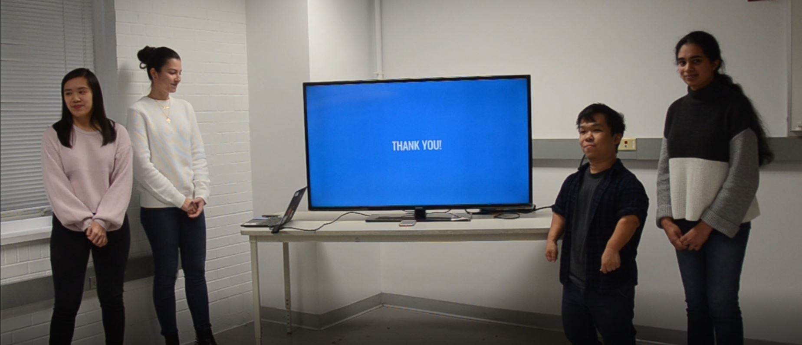

Thanks to our professor, our class was able to conduct a study with HP to review and redesign their HP Smart App and work with printers they provided our class. Our team learned a lot from this experience and the types of research methods needed in order to understand the users we were designing for. OOBE tests allowed us to observe users interactions with the product and provided us with feedback necessary to understand what they were looking to accomplish and highlighted what their frustrations were. Journey maps allowed us to visualize the interactions taken by the user, which provided insight from the customer perspective. Many of the steps taken helped us with our analysis and redesign of the app, underlining areas of the app that needed to be fixed based off the data we received during this study. Overall, this was a wonderful learning experience for us and it was great being able to present our findings and ideas to HP.